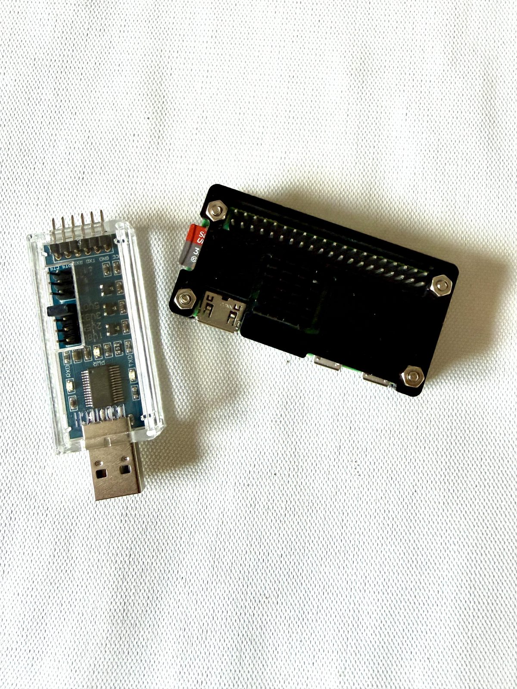
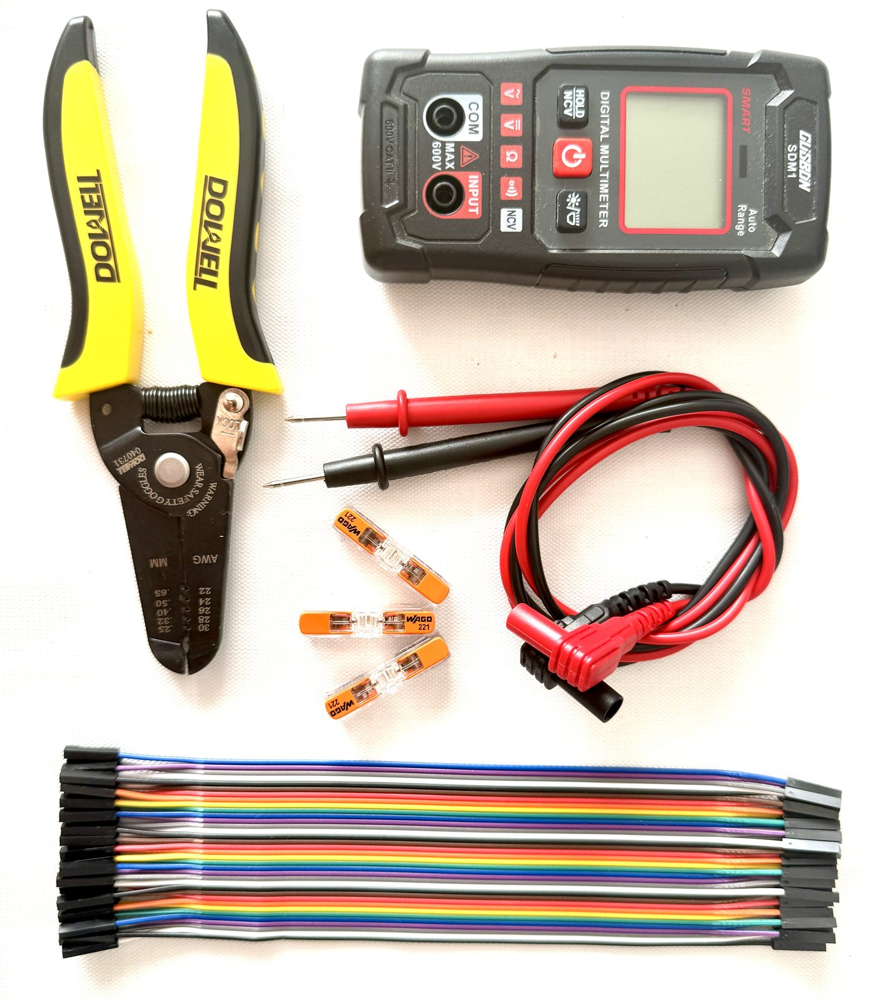
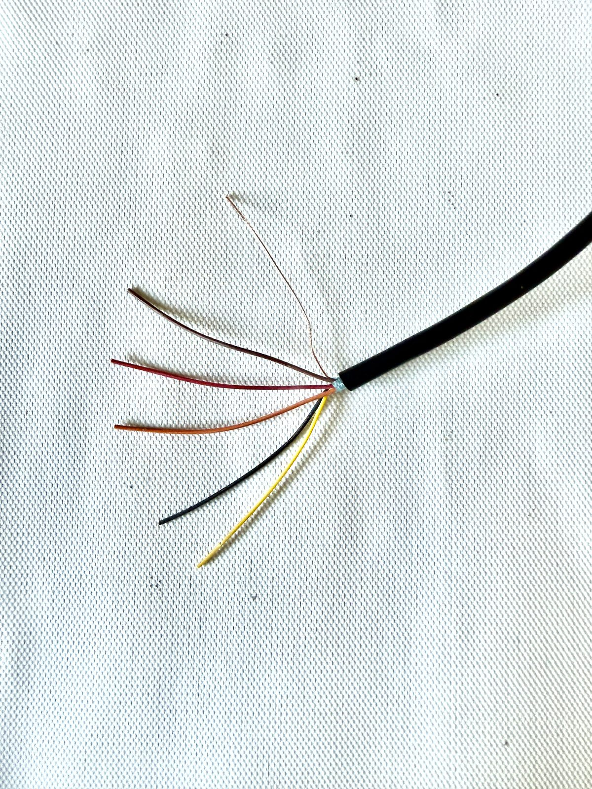
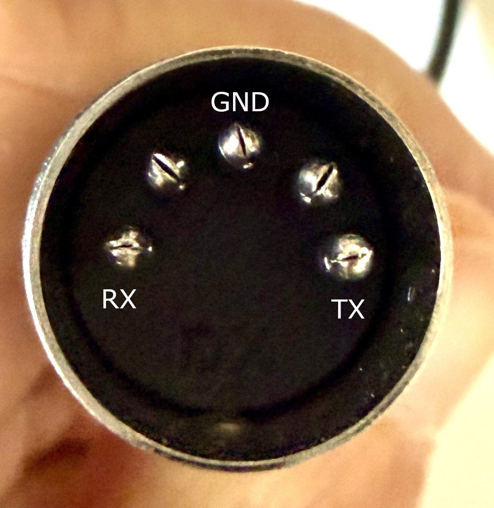
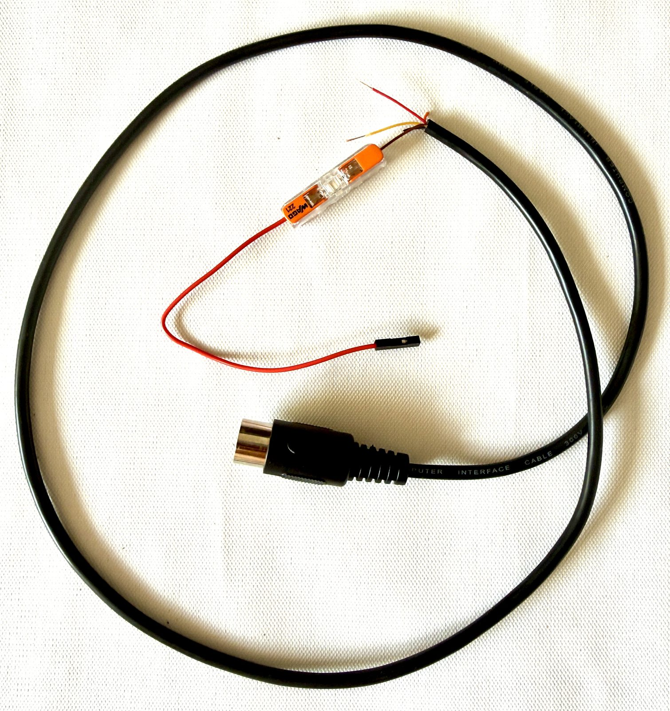
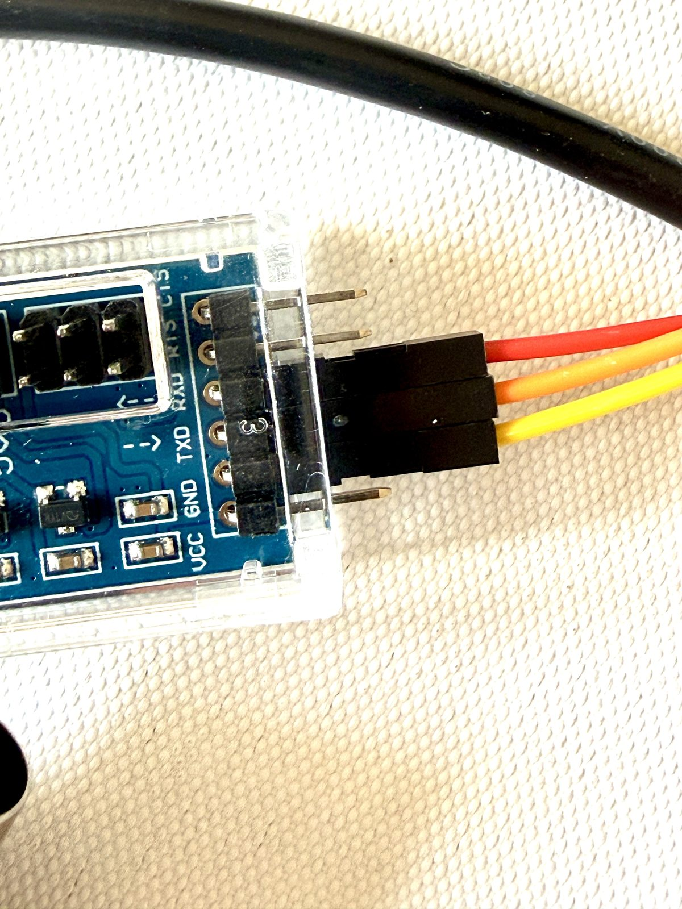
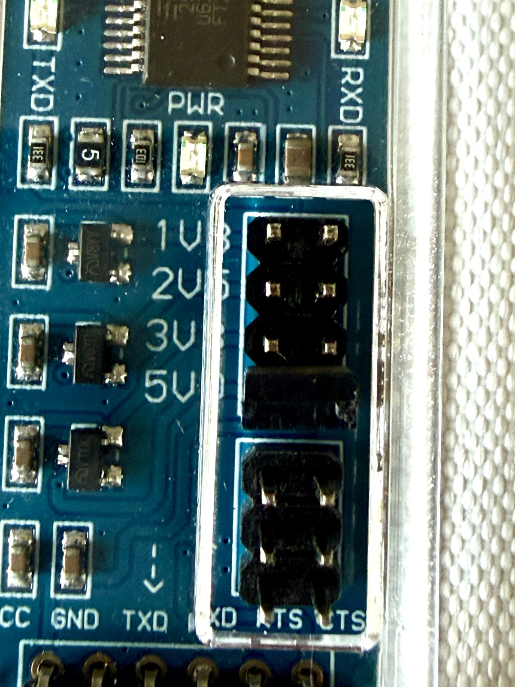

Les ingrédients
Pour réaliser cette recette, vous aurez besoin de :
- un Raspberry Pi Zero W (ou Zero 2 W, ou 3 — plus puissants mais plus chers) et un adaptateur FTDI ;
- quelques outils : un voltmètre, une pince à dénuder pour petits fils, des câbles Dupont ;
- un vieux câble audio à fiche DIN ronde (5 broches) à sacrifier ;
- idéalement des Wago Inline (connecteurs rapides) pour les raccords.


🛒 Où trouver le matériel
- Le Raspberry complet (câbles, carte micro SD, boîtier) — kit Starter, livraison rapide et bon tarif :
kubii.com — Kit Pi Zero W Starter - Le reste (FTDI, outils, connecteurs) dans cette liste publique :
Liste Amazon — matériel MINITEL GPT
Le montage, étape par étape
Une fois tous les ingrédients réunis :
-
Coupez le câble audio en deux, à la moitié de sa longueur — ça vous en fera deux, un de secours !
-
Dénudez les petits fils. Utilisez le calibre 0,4 ou 0,5 mm de la pince (ça dépend de votre câble). Attention, ces fils sont minuscules et fragiles.

-
Repérez les broches utiles au voltmètre (mode continuité) : identifiez quel fil dénudé correspond à quelle broche de la prise. Vous cherchez les trois signaux utiles — 1 = RX, 2 = GND et 3 = TX. Les broches 4 et 5 ne servent pas (la 5 porte une tension d'alimentation), à laisser de côté.

-
Coupez les fils inutiles, ceux qui ne correspondent pas à une broche utile. Il vous reste donc 3 fils : RX, GND, TX.
-
Raccordez côté Dupont. Vous pouvez sertir des cosses Dupont pour faire pro, mais c'est un peu galère. Mon conseil : de petits Wago Inline, rapides et sans effort — en dénudant un câble Dupont pour n'en garder que le côté femelle.

-
Branchez les Dupont sur le FTDI en vous repérant aux sigles imprimés (TXD, RXD, GND) — voir le tableau ci-dessous.
FTDI DIN Minitel Rôle TXD Broche 1 Pi → Minitel (RX) RXD Broche 3 Minitel → Pi (TX) GND Broche 2 Masse commune 
-
Vérifiez le cavalier de tension du FTDI : il doit être sur 5 volts. C'est impératif pour que le Minitel reçoive correctement.

-
Reliez le FTDI au Raspberry Pi. Ports orientés vers vous : le FTDI se branche sur le port USB de gauche, et l'alimentation du Raspberry sur celui de droite.
Et voilà le résultat !

Enfin, la prise DIN ronde vient se brancher à l'arrière du Minitel, généralement cachée par un capot coulissant.
✅ Voilà, la partie câblage est terminée !
Côté logiciel, tout est sur GitHub : flashage de la carte SD, services, et interface d'administration.